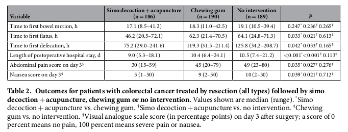

../../cm-ucl/corpus-oa-pmr-v02/10.1038_srep37826/tables/table1/table.png
|
| Age,yr^{*} |
53.7(15.1) |
53.3(14.9) |
54.1(16.2) |
| Sex^{†} |
../../cm-ucl/corpus-oa-pmr-v02/10.1038_srep37826/tables/table1/table.svg.html
|
|

../../cm-ucl/corpus-oa-pmr-v02/10.1038_srep37826/tables/table2/table.png
|
| Timetofirstbowelmotion,h |
17.1(8.5– 41.2) |
18.3(11.0– 42.5) |
19.1(10.5– 39.4) |
0.247 0.236 0.265^{*} † ‡ |
| Timetofirstflatus,h |
46.2(20.5– 72.1) |
62.3(21.4– 70.5) |
64.1(24.8– 71.3) |
0.033 0.021 0.613^{*} † ‡ |
../../cm-ucl/corpus-oa-pmr-v02/10.1038_srep37826/tables/table2/table.svg.html
|

../../cm-ucl/corpus-oa-pmr-v02/10.1038_srep37826/tables/table3/table.png
|
| Table3. Outcomesforpatientswithcolorectalcancertreatedbyopenresectionfollowedbysimo decoction+acupuncture,chewinggumornointervention.Valuesshownaremedian(range). Simo^{*} decoction+acupuncturevs.chewinggum. Simodecoction+acupuncturevs.nointervention. Chewinggum^{†} ‡ vs.nointervention. |
../../cm-ucl/corpus-oa-pmr-v02/10.1038_srep37826/tables/table3/table.svg.html
|

../../cm-ucl/corpus-oa-pmr-v02/10.1038_srep37826/tables/table4/table.png
|
| Table4. Clavien-Dindoclassificationofpost-resectioncomplicationsinpatientswithcolorectal cancertreatedbyresection(alltypes)followedbysimodecoction+acupuncture,chewinggum, ornointervention.Valuesshownaren(%). Simodecoction+acupuncturevs.chewinggum. Simo^{*} † decoction+acupuncturevs.nointervention. Chewinggumvs.nointervention.^{‡} |
../../cm-ucl/corpus-oa-pmr-v02/10.1038_srep37826/tables/table4/table.svg.html
|

../../cm-ucl/corpus-oa-pmr-v02/10.1038_srep37826/tables/table5/table.png
|
| Pneumonia |
1(0.5) |
3(1.6) |
4(2.1) |
0.623 0.372 0.724^{*} † ‡ |
| Bowelobstruction |
3(1.6) |
6(3.2) |
9(4.8) |
0.503 0.083 0.423^{*} † ‡ |
../../cm-ucl/corpus-oa-pmr-v02/10.1038_srep37826/tables/table5/table.svg.html
|